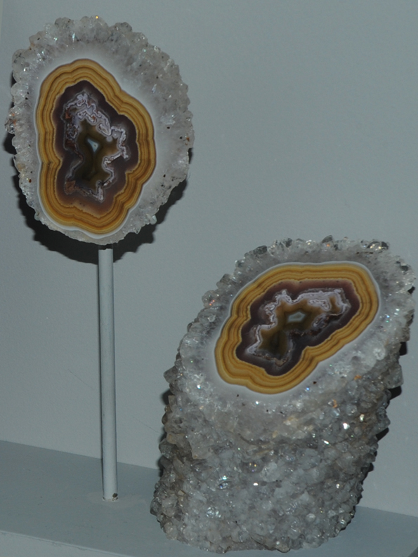
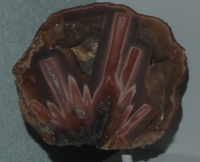
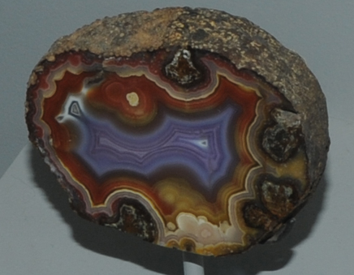

Agate Quartz
|
Quartz is silicon dioxide, SiO2. Quartz is abundant in the Earth's crust, being the chemically simplest form of the silicates. All the samples here are displayed in the Smithsonian Museum of Natural History. The appearance of agate is strikingly different from our visualization of quartz as clear crystalline material! The layered structures of agate record a crystal growth process which produces dramatic patterns. The sample at right is about 4x5 cm in cross-section and is from Chihuahua, Mexico. |  |
 | 
|
Microcrystalline quartz rocks are collectively called chert, but varieties of chert are given other specific names. Agate is one of the distinctive varieties of quartz.
The specimens of agate above are from Chihuahua, Mexico. The one at left is about is about 9x14 cm and the one at right 12x13 cm.
 | This specimen of agate is about 18x20 cm and is from Dryhead, Montana. |
|
This specimen of agate is about 10x8 cm and is from Coyamito Ranch,Chihuahua, Mexico. |  |
|
Index |